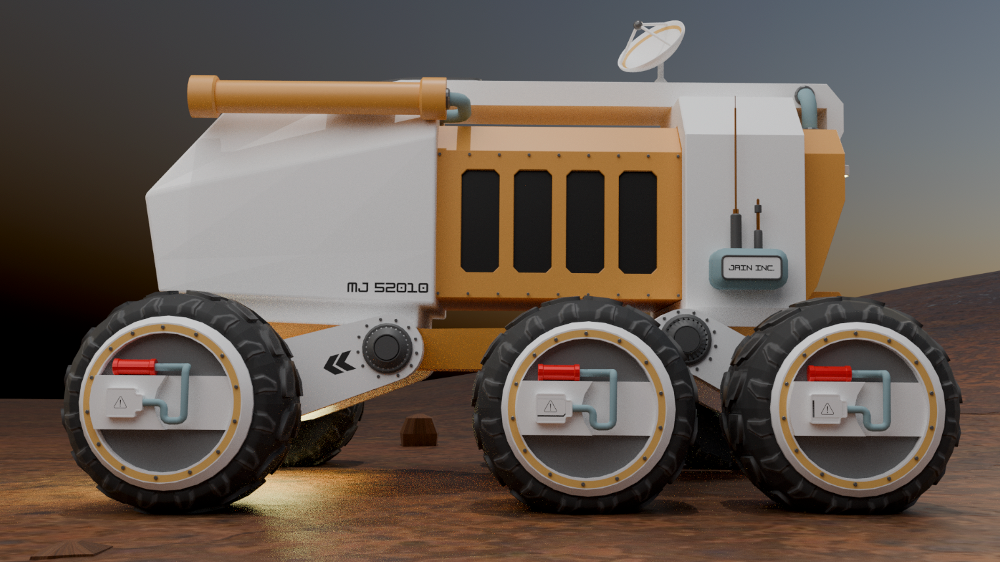
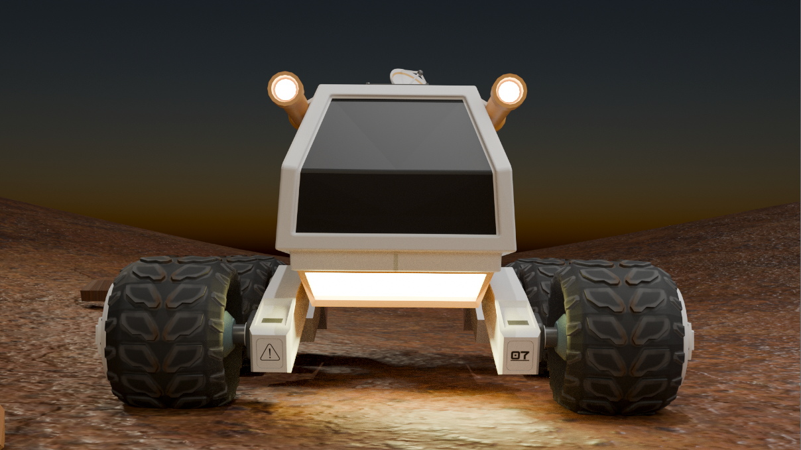
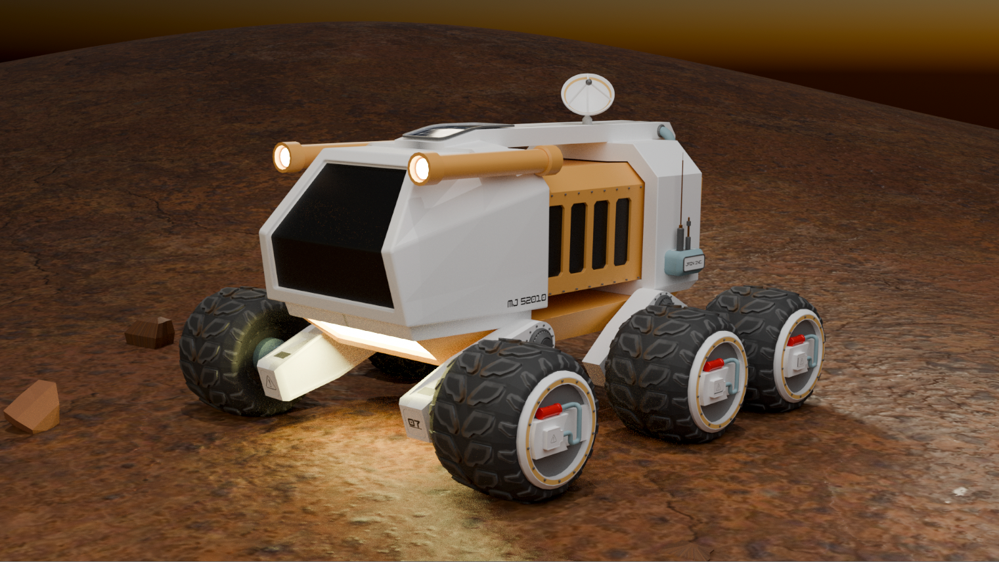

MARS TRANSPORTATION CONCEPT // 2040+
THEORETICAL
MARS ROVER
A speculative vehicle designed for a future where Mars is no longer just a destination — it's a home.
EXPLORE THE ROVER ↓THE VISION
FROM EXPLORATION
TO TRANSPORTATION.
After seeing futuristic visualizations of what a human settlement on Mars could look like, I started thinking about a simple question:
“How would people actually get around?”
Theoretical Mars Rover is my artistic answer — a speculative transportation vehicle for inhabitants of a future Martian colony.
INTERACTIVE MODEL
MEET
MR-01.
DRAG TO ROTATE · SCROLL TO ZOOM
BUILT IN BLENDER 3D
FROM SIMPLE
SHAPES TO MARS.

01 // FINAL RENDER
02 // SIDE PROFILE
03 // FRONT PROFILEBuilt from primitive meshes including cubes, cylinders, planes, and spheres.
Created the irregular Martian terrain from a sculpted plane.
Used UV editing and texture painting to add graphics and surface detail.
Applied materials, emission, and environmental lighting for the final render.
WHAT'S NEXT?
THE FIRST RIDE
IS ONLY THE BEGINNING.
MR-01 is a concept, not a finished engineering specification. The next evolution could expand this single vehicle into an entire Martian transportation network — connecting habitats, research stations, and exploration zones across the planet.